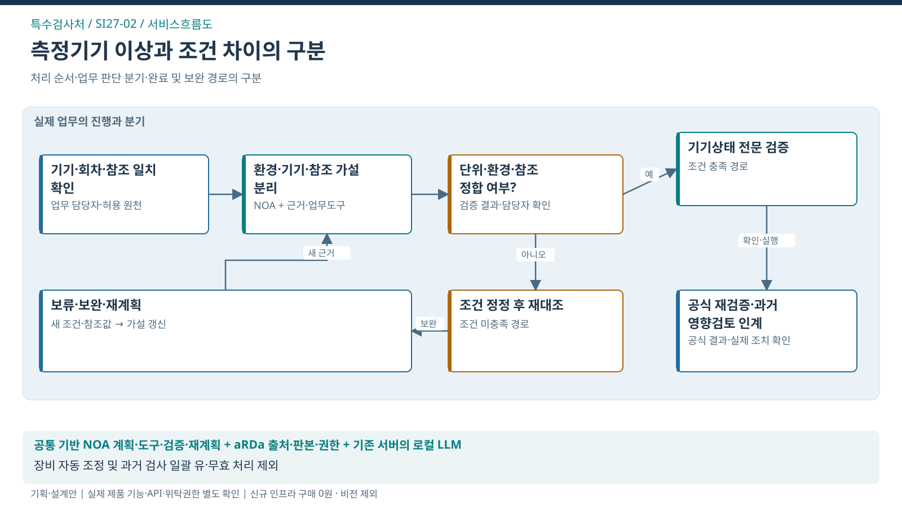

특수검사처 / SERVICE FLOW
측정기기 이상 검증과 판정 신뢰성 회복
기기 이상·조건 차이의 구분과 검증·조치·재검증의 정확한 인계

처리의 대상
기기–측정회차–조건–참조
업무 전환
기기·회차·단위·환경·기준의 동일성 확인 → 환경차·기기상태·참조자료 등 경쟁 가설을 분리 → 전문가에게 필요한 측정·조정·재검증 계획 인계 → 재검증 결과와 잔여 불확실성을 후속 담당자에게 전달
완료의 기준
전문가 검토와 공식 재검증 결과가 원 기기·이상조건에 연결되고 후속 영향검토가 인계됨
이 서비스의 법정업무 기반
특수검사처와 연결된 업무
법적 수행범위에서 출발하는 AX 제안
연결은 소관·예산권의 확정과 구분
- 내압용기 재검사 ↗자동차검사대행자의 검사 수행
- 검사기기 정밀도·정도검사 ↗정밀도검사 법정 위탁 / 환경기기는 지정 범위
- 궤도·삭도 안전검사 ↗전문기관에 위탁 가능
문제 근거와 기대편익
업무 근거: TS 공개업무 안내
해결할 문제 가설: 측정조건 차이와 기기 이상을 구분하는 자료 수집·검증 순서에 반복 부담이 있을 수 있음
수혜자: 검사업체·해당 검사를 이용하는 국민
기대효과: 기관 — 잘못된 원인확정·후속 인계 누락 완화 / 업체·국민 — 검사 결과의 신뢰성 확보
확인 지표: 원인 확인까지의 검증 반복·잘못된 원인확정·후속 미인계
기준값·목표 개선율: 현업 실증으로 확정
전문가 역할·제외범위·검증조건
전문 판단·실행: 전문 담당자의 계측·원인 확인과 공식 정도검사 판정
이번 과업 제외: LLM의 장비 제어·조정, 밸브·안전장치 조작, 형식승인·공식 판정 대체
선행 확인: 기기군 1종·이상 유형 1~2개·과거 사건과 시험환경
제품 역할은 적용안. TS 설치·성능·현업 효과의 검증 완료와 구분.